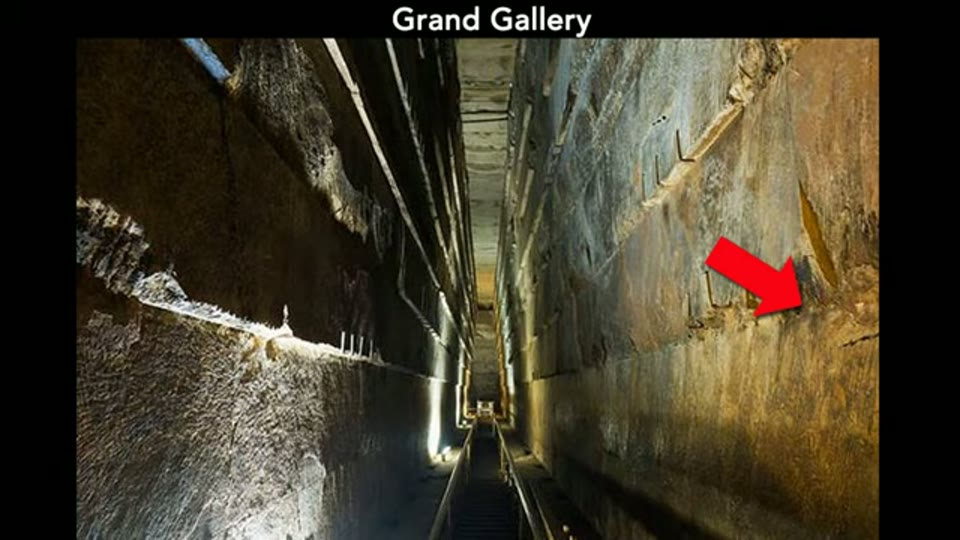
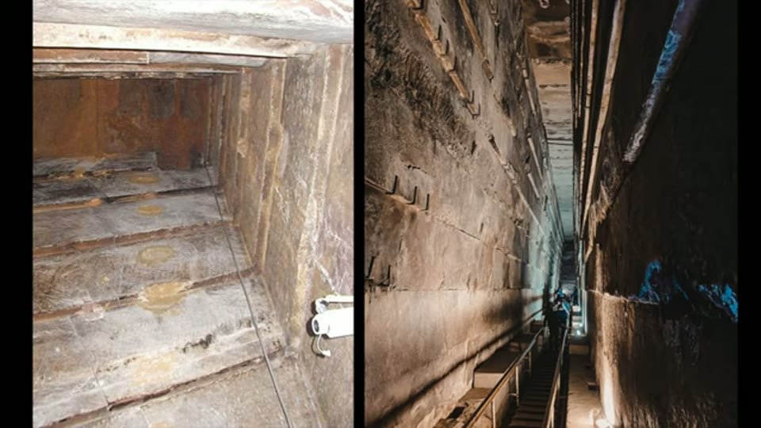

Curious Being
Egyptian Pyramids Reveal Acid Mine Drainage Stains?
Tina · 17 min · watch on YouTube · summarised 2026-09-27
A question-and-answer video. Having argued that the pyramids are mine waste storage with interiors that treat acid drainage, she takes the four objections she says came up most often.
The first fifth restates the thesis, with one framing worth keeping 02:16–03:54: modern construction is designed for 40 to 60 years, the hundred-year figure applies to a bridge's main structural members, and nobody can guarantee a century because you would have to wait a century to check — which is why, she says, there are no consensus standards for long-term infrastructure performance. Mine waste storage has to outlast all of it with less maintenance.
One — are there signs of acid drainage inside the pyramids?
07:09–09:45 Her answer is colour, and she is careful to say the photographs are untouched.
- The Grand Gallery entry, in shots taken before it was covered up, appears to her to show water or acid drainage erosion; the gallery walls carry orange stains.
- Dark spots on the Grand Gallery ceiling, over 8 m up, which others have read as scorch or explosion marks. Her objection is placement: marks of that kind would mean small close-range explosions or torching, and it is hard to see why that would be done at the very top of the gallery. She suggests drainage staining instead — "like the ones we see in some unfortunate water leaking situations. Just a thought."
- Graffiti written over orange staining on a relieving chamber ceiling, which she reads, in the only sequenced observation in the video, as showing the stains were there first.
- The King's Chamber air shafts, with what look like water erosion marks and darkened interiors; photographs taken inside the shafts show the bottoms darker than the walls.
- Orange in the passages, and reddish residues on the walls and rock channels of the subterranean chamber, where she points out the contrast between a grey ceiling and reddish rock.
She notes the damage could equally be age or wear, that she cannot say, and that the interiors are cleaned periodically so traces of iron oxide may be removed from time to time.
Two things about the graffiti photograph need saying, because it carries the strongest observation here. The staining is real and the writing does sit over it. But the writing is modern visitor graffiti in pencil and charcoal — names like E. Moose and G. Coyon, initials, dates — so what the photograph establishes is that the stains are older than recent tourism, not that they are older than anything ancient. And the image carries a photographer's copyright watermark across the middle of it, so it cannot be published here.

The orange colouring in the Grand Gallery that she reads as iron oxide from acid drainage.

The dark marks high on the Grand Gallery ceiling, which others read as scorching and she proposes are drainage staining.
Two — why is there no drainage staining outside, now the casing is gone?
09:45–11:30 Exposed blocks on the Giza plateau have a slight orange cast she reads as staining, darker than plain limestone, and the same appears on the Bent Pyramid. Her reasoning: if the core stones are cemented mine waste, then with the casing gone the sulphide minerals bound into them would break down on exposure and produce acid drainage at the surface.
What the exterior photograph shows is not a general orange cast but vertical streaking: pale brown runs falling from the horizontal joints down the faces below them, and the same pattern on the loose blocks lying about on the pavement. That is the shape water makes running down a wall — a fact about the pattern, not an answer to what the colour is.
Two supporting points. The Red Pyramid takes its name from the warm colour of its iron-rich limestone — and under comparable light, she observes, it does not look redder than the Giza pyramids. And a material-analysis paper she cited previously found iron oxide in the core stones of all three Giza pyramids.
Of course this is my conjecture. Investigations on the subject are needed.

Staining on exposed blocks outside, offered as what should happen if the core stones are cemented mine waste.
Three — how can air shafts be drains if they are not watertight, and what about the doors?
11:31–14:23 The best-argued section.
Drains are not meant to be watertight. A perforated pipe or channel collects water precisely through its holes. She shows a French drain sitting at ground level over gravel, a curtain drain starting about two feet down, and the internal drainage of concrete gravity dams — vertical or inclined wells and boreholes, and porous concrete pipe.
The doors. The King's Chamber shafts reach the outside, and may once have been covered by casing stones. The Queen's Chamber shafts do not reach the outside; both have blocking slabs about 200 ft, 61 m, along their length. Her point is what that leaves: two hundred feet of open channel draining toward the chamber. She measures roughly where 200 ft puts the slab and finds it lands close to the pyramid's outer layer — so the "doors" may be nothing more than the start of a drainage channel, which she says fits the shafts being empty with nothing behind the slab but a rough block a short distance beyond.
The copper handles, she suggests, work like the handles on a modern concrete pipe cap or plug.

Her reading of the blocking slab's copper fittings as the handles on a pipe cap, put side by side so it can be judged.
Four — are there other sites like this?
14:23–15:12 She thinks so, and names the Bosnian pyramids: very large, with complex underground tunnel systems. Reporting the excavators, she says man-made stone walls were found beneath the Neolithic and Roman cultural layers, which would make the tunnels older than the Neolithic, and that some tunnels were backfilled — normal practice in underground mining.
What is left over
15:35–16:25 She raises an objection against herself and defers it. The Great Pyramid has only four air shafts, each about 9 inches, 23 cm square. Are they not far too small to drain a structure of that size? Her answer is that it depends on the climate the pyramid was built for, and therefore on whether it went up during the Green Sahara, which ended around 5,000 years ago, or in dry conditions like today's — the subject of the next video.
What you can check yourself
- The graffiti and the staining under it are in the relieving chambers and photographed constantly. Whether the writing sits on top of the colour is a visual question with a definite answer, and it is the one claim here that establishes an order of events.
- The Grand Gallery ceiling marks exist and are argued over. Their height, over 8 m, is a survey figure, and it is the basis of her objection to the explosion reading.
- The blocking slabs in the Queen's Chamber shafts were found by robot, their distance along the shafts is published, and the copper fittings on them are photographed.
- Her geometric point can be checked on any section drawing: where 61 m along the shaft puts you, relative to the pyramid's outer face.
- Perforated drainage is ordinary civil engineering. French drains, curtain drains and the boreholes inside gravity dams all work by letting water in.
- The Red Pyramid's colour and whether it reads redder than the Giza pyramids in comparable light is something anyone can test from photographs.
- Iron oxide in the Giza core stones comes from a published analysis and can be read.
- Whether the interiors are periodically cleaned is a matter of site management, and she raises it herself as something that would remove the evidence she is looking for.
What the video does not settle
- The evidence is colour, judged by eye, from photographs she did not take. She says she did not adjust the colour, and that is worth something — but it says nothing about how the originals were lit, exposed or processed, and orange casts are the easiest artefact in photography to produce accidentally.
- The lighting confound is visible in two of her three interior examples. The Grand Gallery frame is lit by warm artificial lamps: the lit right-hand wall reads orange along its whole length while the shadowed left-hand wall reads grey-blue, and the arrow points at the lit side. In the subterranean chamber frame, the grey ceiling she contrasts with the reddish floor is the part of the room in shadow. Neither photograph can separate the colour of the stone from the colour of the light.
- The graffiti is modern, so the sequence it establishes is that the stains are older than recent visitors.
- Nothing is sampled, and a swab would settle it. Iron oxide, soot, salt efflorescence, lamp black and biological growth are distinguishable in an afternoon. The entire question turns on which of those the colour is, and no test is proposed.
- Limestone stains orange without any help. Iron impurities, groundwater movement and ordinary weathering all do it, which is why the Red Pyramid is called the Red Pyramid — a fact she cites in the same section for a different purpose.
- Soot is not considered. The obvious candidate for dark marks on the ceiling of a chamber that people have walked through with torches, candles and lamps for centuries is smoke, which rises. She rules out close-range explosions and moves to drainage without that step.
- The graffiti observation dates nothing. That the stains predate the writing is a real result; how far it predates it is not addressed, and the graffiti in those chambers is itself disputed.
- The "doors" argument assumes what the shafts are for. That 200 feet of shaft is unobstructed is true on any reading; it becomes drainage only if the drainage hypothesis is already granted. And a drain that ends at a sealed slab with a rough block behind it is a drain with no outlet.
- Copper handles on a blocking slab resemble handles on a pipe cap, and that is the whole argument. No dimension, no fixing method, no metallurgy — and her own side-by-side does not flatter it: the shaft fittings are two short pins lying almost flush with the slab, while the pipe lid carries two large steel stirrups standing well proud of the concrete.
- Her own drainage figure names what the comparison lacks. The illustration behind the perforated-drain answer labels the pipe "sloped to drain away from the wall" and packs it in porous backfill behind a filter-fabric mat. A fall to an outlet and a permeable surround are what make a perforated pipe a drain rather than a hole, and neither is established for the shafts.
- The scale problem is stated and postponed. Four channels of 23 cm square for a structure of six million tons is her own objection, and it is handed to the next video rather than answered.
- The Bosnian pyramids are accepted on their excavators' word. She reports the stratigraphy and the backfilled tunnels as the excavators give them, without noting that the site's artificiality is disputed — which is a markedly lower standard than she applies elsewhere, for instance to Gunung Padang.
- The transcript for this video is machine-generated, so nothing here should be quoted without checking the audio — see below.
See also
What were Great Pyramids' Function If Not Tombs? — the mine-waste storage argument these questions are about.
Egyptian Pyramids' Interior Enigma That Experts Can't Explain — the acid drainage treatment reading of the substructures, restated here in a paragraph.
The Mystery of the Great Pyramid's Interior System? — where the air shafts are first proposed as drainage channels.
Prehistoric Mining: What was Mined on the Giza Plateau — the iron case, and the reddish staining near Khafre's causeway.
Were the Egyptian Pyramids Originally a Prehistoric Mine? — the consolidated statement of the whole thesis, with the material-analysis papers named.
What we have not checked
- This transcript is machine-generated and the proper nouns are unreliable. Corrected from context and from the channel's own chapter titles: "grey/gray pyramid" is the Great Pyramid, "subtrenium" is subterranean, "the coffered on the mongkori" is the Khafre and the Menkaure, "coins chamber" is the Queen's Chamber, "slack keeps" is slag heaps, "activated for mining" is excavated, "the band" is the Bent Pyramid, "a front string" is a French drain, "a curtain ring" is a curtain drain, "inoxic" is anoxic, "course knowns" is core stones. The track is labelled
Kind: captionsbut carries no sentence punctuation, so the channel appears to have uploaded the automatic transcript unedited. Nothing here should be quoted without listening to the video. - The research paper reporting iron oxide in the core stones is referred to, not shown, and is named nowhere in this video.
- No stain in this video has been identified by anything but eye.
- The Bosnian pyramid claims are as the excavators state them and have not been checked.